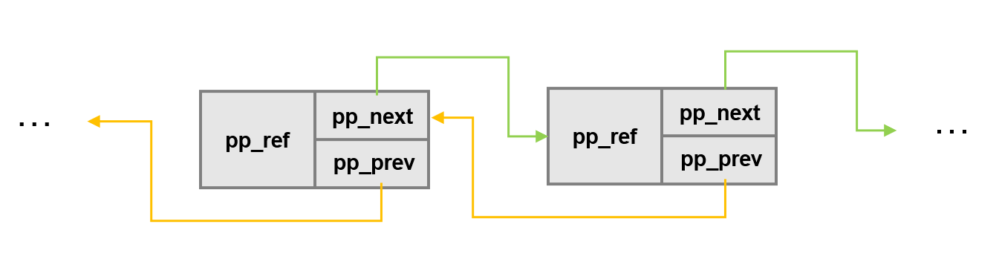
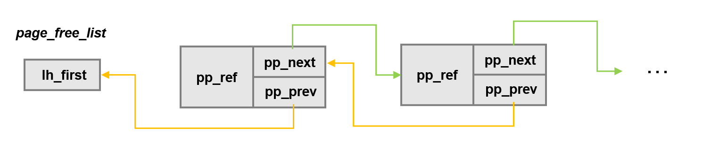
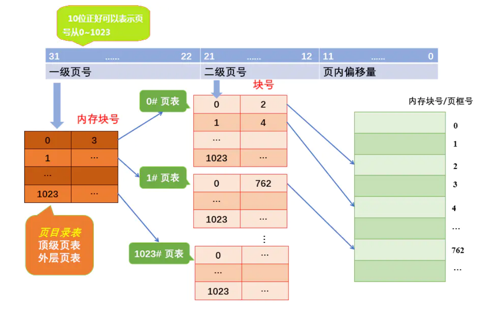
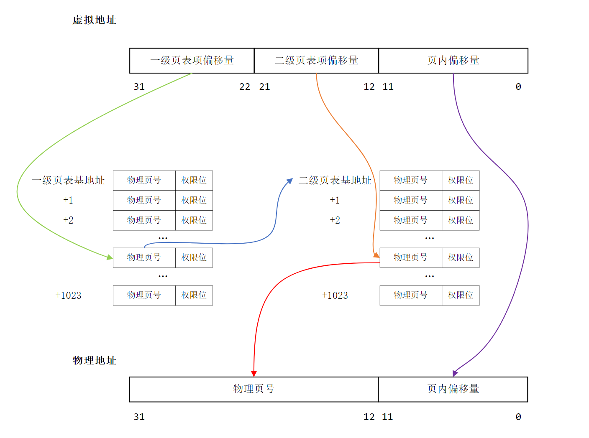

Lab2 实验报告
实验思考题
Thinking 2.1
Q： 在我们编写的 C 程序中，指针变量中存储的地址是虚拟地址还是物理地址？ MIPS 汇编程序中 lw, sw 使用的是虚拟地址还是物理地址？
A： 因为CPU只会发出虚拟地址，因此指针变量中储存的是虚拟地址。MIPS汇编程序中lw、sw中使用的也是虚拟地址。
Thinking 2.2
Q1： 请从可重用性的角度，阐述用宏来实现链表的好处。
A1： 使用宏定义对链表操作进行封装，可以实现代码的复用，既减少了工作量，也提高了程序的可读性
Q2： 请你查看实验环境中的 /usr/include/sys/queue.h，了解其中单向链表与循环链表的实现，比较它们与本实验中使用的双向链表，分析三者在插入与删除操作上的性能差异
A2： 三者的操作性能有以下差异——
- 对于单向链表，由于它只能获得每一项的后面一项，因此在删除时需要遍历整个链表；同样，如果是在某一项的前面插入，也需要从
head开始遍历这个链表。但是如果是“在某一项之后插入”，单项链表可以直接进行该操作。 - 对于循环链表，因为它仍然是单向的，所以在“删除”、“某一项之前插入”、“某一项之后插入”三个操作的性能和单项链表相同。但是，由于循环链表首尾相连，同时维护了一个指向尾项的指针，因此它可以直接在尾部插入。
- 对于双向链表，因为它可以直接获得某一项的前后两项，所以无论是“删除”还是“在某一项前或后插入”都可以以O(1)的开销实现。但是，双向链表没有维护指向尾部的指针，因此无法直接将某一项插入链表尾部，如要实现该操作还需要遍历整个链表。
Thinking 2.3
Q： 选择Page_list正确的展开结构。
A：
struct Page_list {
struct {
struct {
struct Page *le_next;
struct Page **le_prec;
} pp_link;
u_short pp_ref;
}* lh_first;
}
Thinking 2.4
Q： 请你寻找上述两个boot_* 函数在何处被调用
A： boot_pgdir_walk()在boot_map_segment()函数中被调用，用于在建立映射时根据 虚拟地址寻找二级页表项。boot_map_segment()在mips_vm_init()中调用，用于将kuseg中的UPAGES和NENV两个区域映射到物理地址空间。
Thinking 2.5
Q1： 请阅读上面有关 R3000-TLB 的叙述，从虚拟内存的实现角度，阐述 ASID 的必要性
A1： 操作系统会给每一个进程分配一个页表，每个页表都有自己的虚拟地址空间，而同一虚拟地址在不同地址空间中通常映射到不同的物理地址。如果没有ASID来区分当前虚拟地址是在哪个进程中使用，则可能会将该虚拟地址映射到错误的物理地址。
Q2： 请阅读《IDT R30xx Family Software Reference Manual》的 Chapter 6，结合ASID段的位数，说明R3000中可容纳不同的地址空间的最大数量
A2： ASID在HntryHi寄存器中占6位，可以被设置为64个不同的值，因此
R3000中可最多容纳64个不同的地址空间。
"By setting up TLB entries with a particular ASID setting and with the EntryLo G bit zero, those entries will only ever match a program address when the CPU’s ASID register is set the same. This allows software to map up to 64 different address spaces simultaneously, without requiring that the OS clear out the TLB on a context change. " ——《IDT R30xx Family Software Reference Manual》
Thinking 2.6
Q1： tlb_invalidate 和 tlb_out 的调用关系是怎样的？
A1： tlb_invalidata函数中调用了tlb_out函数。
Q2： 请用一句话概括 tlb_invalidate 的作用
A2： 在页表内容改变后及时更新TLB。
Q3： 逐行解释 tlb_out 中的汇编代码
A3： tlb_out作用实际上就是使得某一虚拟地址对应的tlb表项失效，基本思路是——先将要查找的虚拟地址存入EntryHi寄存器，然后调用tlbp指令在TLB中查找（此时Index寄存器中保存了找到的对应表项的索引）。如果没有找到（索引小于0），则直接跳到最后；如果找到了，将索引对应的tlb项清空（需要将EntryHi和EntryLo寄存器清零后使用tlbwi指令）。注意在函数最后需要将“调用该函数前EntryHi寄存器中的值恢复”
LEAF(tlb_out)
//1: j 1b
nop
mfc0 k1,CP0_ENTRYHI #将EntryHi寄存器的值存入k1寄存器
mtc0 a0,CP0_ENTRYHI #将a0中的值存入EntryHi寄存器
nop
tlbp #根据EntryHi在TLB中查找与之对应的表项，并把表项的索引存入Index寄存器
nop
nop
nop
nop
mfc0 k0,CP0_INDEX #将Index寄存器的值存入k0寄存器
bltz k0,NOFOUND #如果k0值小于零，即没有在TLB中找到EntryHi对应的表项，则跳转到NOFOUND标签处
nop
mtc0 zero,CP0_ENTRYHI #将EntryHi寄存器赋值为0
mtc0 zero,CP0_ENTRYLO0 #将EntryLo0寄存器赋值为0
nop
tlbwi #将EntryHi和EntryLo0寄存器中的值存取Index对应的TLB表项中
NOFOUND:
mtc0 k1,CP0_ENTRYHI #将k1寄存器中的值存入EntryHi寄存器(恢复到调用该函数之前的状态)
j ra #函数返回
nop
END(tlb_out)
Thinking 2.7
Q： 在现代的64位系统中，提供了64位的字长，但实际上不是64位页式存储系统。假设在64位系统中采用三级页表机制，页面大小4KB。由于64位系统中字长为8B，且页目录也占用一页，因此页目录中有512个页目录项，因此每级页表都需要9位。因此在64位系统下，总共需要3 × 9 + 12 = 39位就可以实现三级页表机制，并不需要64位。现考虑上述39位的三级页式存储系统，虚拟地址空间为512GB，若记三级页表的基地址为$PT_{base}$，请你计算：
- 三级页表页目录的基地址?
- 映射到页目录自身的页目录项
A： 三级页表页目录的基地址为
$$PT_{base} + PT_{base}<<9 + PT_{base}<<18$$
映射到页目录自身的页目录项
$$PT_{base} + PT_{base}<<9 + PT_{base}<<18 + PT_{base}<<27$$
Thinking 2.8
Q：简单了解并叙述 X86 体系结构中的内存管理机制，比较 X86 和 MIPS 在内存管理上的区别
A： 两者有以下三点主要区别——
-
首先是内存管理机制上，MIPS主要采用的是页式管理系统，X86主要采用的是段页式
-
其次，在对 TLB 不命中时的处理上，MIPS 会触发TLB Refill 异常，内核的
tlb_refill_handler会以pgd_current为当前进程的PGD基址，索引获得转换失败的虚址对应的PTE，并将其填入TLB，然后CPU再用刚刚转换失败的虚拟地址重新访问以下TLB。而X86在TLB不命中时，是由硬件MMU以
CR3为当前进程的PGD基址，索引获得PFN后，直接输出PA。同时MMU会填充TLB以加快下次转换的速度。另外转换失败的虚址，MIPS使用
BadVAddr寄存器存放，X86使用CR2存放。
实验难点图示
我认为该实验主要包含以下两个难点——Page存储结构和二级页表查询机制
Page存储结构
Page是我们用于管理物理内存块的结构体，该结构体包含两部分——一个是"数据域"（pp_ref）,另一个是"指针域"（pp_link）。
struct Page{
u_short pp_ref;
struct {
struct Page *le_next;
struct Page **le_prec;
} pp_link;
}; 其中，pp_ref代表着该物理内存块被引用的次数，即有多少个虚拟地址映射到该物理内存块。pp_link中包含两个指针变量——le_next和le_prec，前者是指向后一个Page结构体的指针，后者是指向前一个Page的le_next的指针。
所以"前"、"后"是指什么意思呢？原来，我们为了便于对空闲物理内存块的管理，将所有空闲物理内存块对应的Page结构体用一个链表链接了起来，为了便于链表的增删改查，我们就需要上述le_next和le_prec发挥作用了。链表示意图如下所示

可以看到，上面的链表实际上是一个双向链表，但和我们常见的双向链表又有区别。该双向链表可以直接通过le_next来访问下一个链表项，但却无法直接访问上一个链表项。因为le_prec仅仅是指向了前一个Page的le_next，换句话说，就是一个指向了"指向自己的指针"的指针。虽然le_prec无法帮助我们直接访问上一个链表项，但是，它却可以帮助我们以O(1)的开销实现链表的增删操作。
此外，为了便于定位该链表的首项，我们还定义了一个结构体page_free_list用于存储指向链表首项的指针
struct Page_list {
struct Page *lh_first;
} page_free_list;因此，最终的链表结构为——

二级页表查询机制
所谓二级页表机制，实际上就是将页表再进行分页，离散地将各个页表页面存放在不同的物理块中，同时也再建立一张"外部页表"用以记录页表页面对应的物理块号，这个"外部页表"实际上就是 “页目录”，也是第一级页表。示意图如下所示——

由于页目录自映射机制的存在，页目录实际上也是众多二级页表中的一个，并非是一个独立于外部的页表。
我们将虚拟地址分成三部分——
- 31~22位是页目录中的表项号，我们可以根据该表项号从页目录中取出对应的页表项，该页表项中储存的是二级页表首地址。
- 21~12位是二级页表中的表项号，我们可以根据该表项号从二级页表中取出对应的页表项，该页表项中储存的是虚拟地址所对应的物理页框的首地址。
- 12~0位是页内偏移，通过将上面得到的物理页框的首地址和页内偏移相加，最终就可以得到虚拟地址对应的物理地址。
二级页表的整个访存流程如下所示——

体会与感想
Lab2主要是实现MOS中的内存管理机制，包括物理内存管理、虚拟内存管理和TLB重填机制。和Lab1相比，本次Lab代码量剧增，而且链表操作部分使用了指向指针的指针，对代码的理解和补全也造成一定困难（有的时候甚至怀疑自己是不是真的学会了指针qwq）。虽然一路艰辛，但是做完整个Lab2之后，不仅让我巩固了理论课上学到的内存管理相关知识，还使我加深了对指针操作的理解，可以说是收获满满啦😄